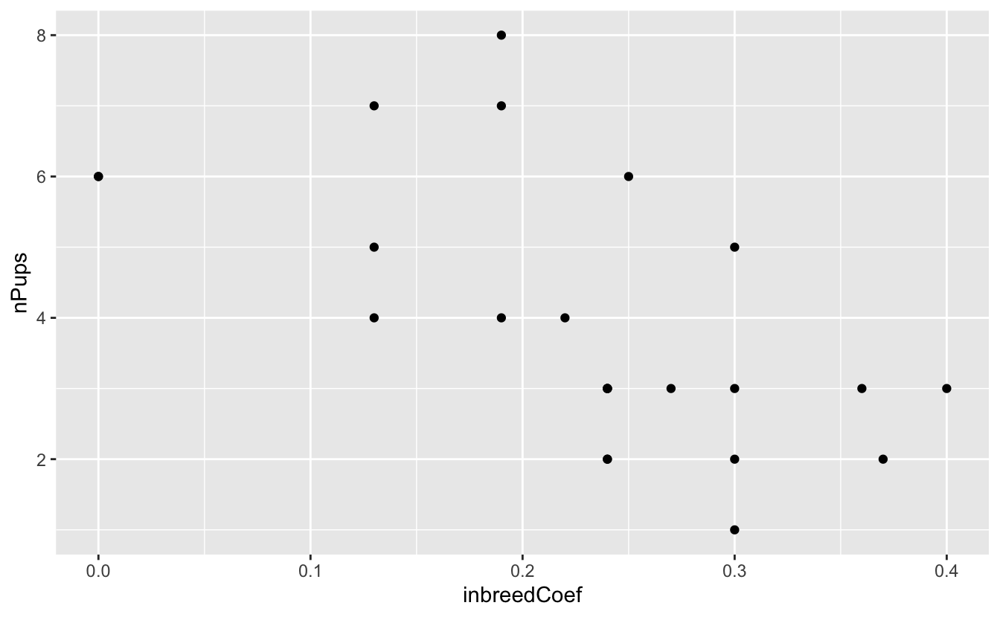
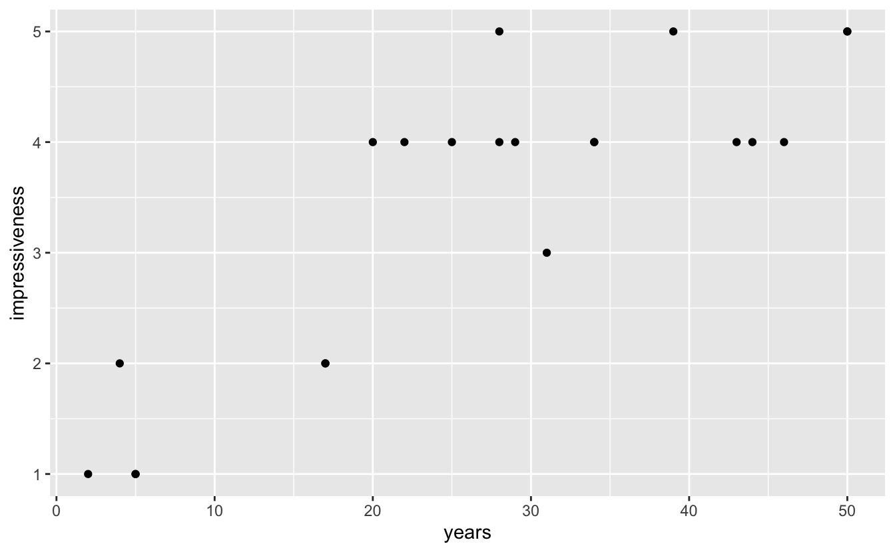
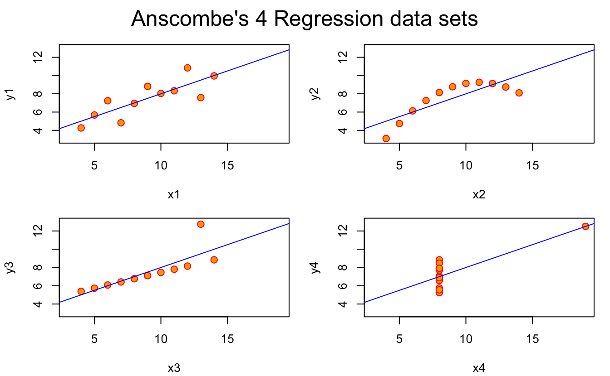
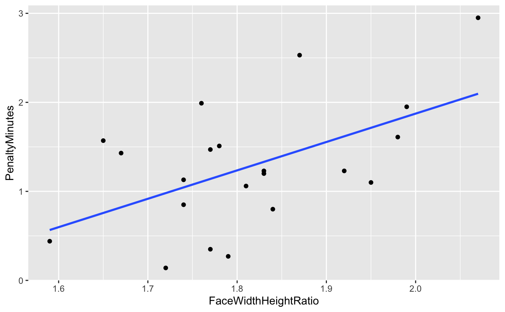
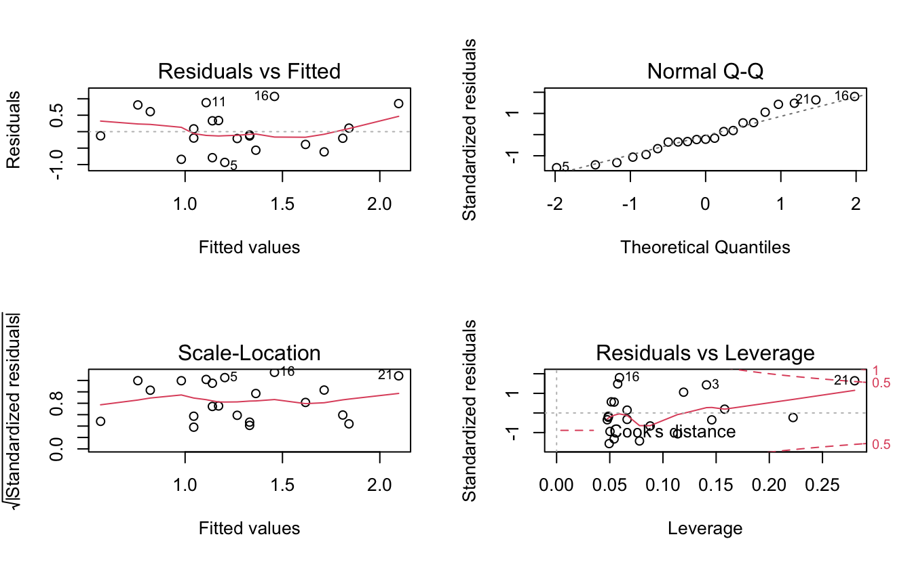
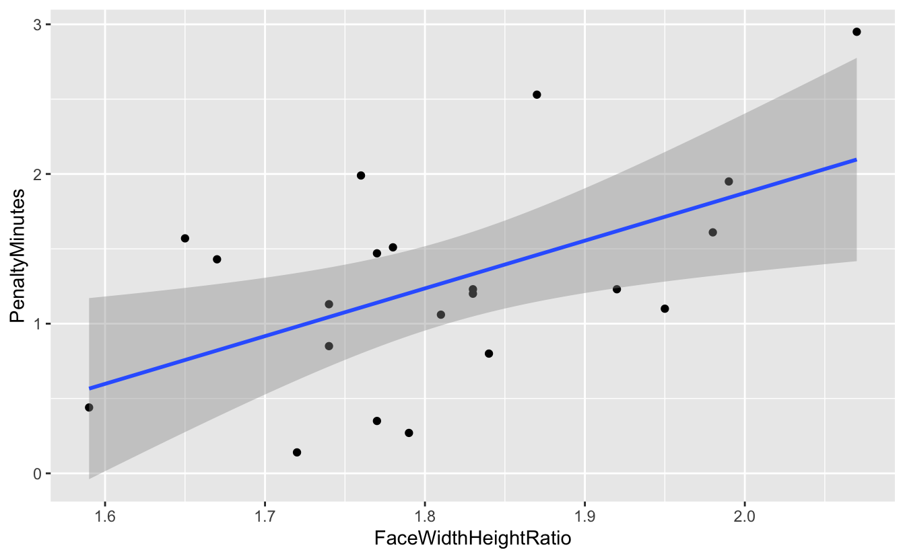
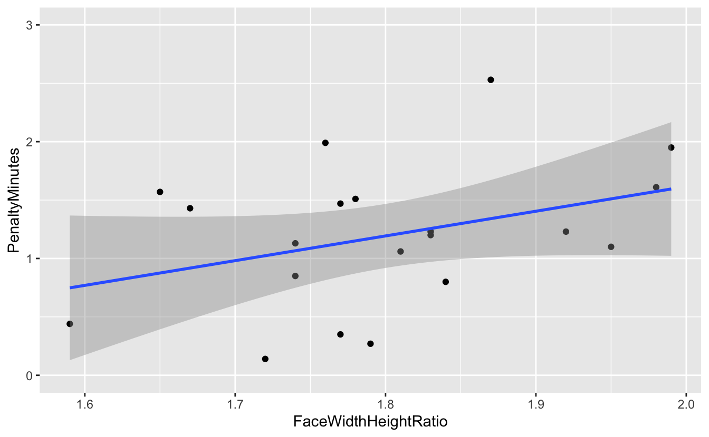

6 Correction des exercices du chapitre 5
6.1 Corrélation
6.1.1 Canis lupus
Comme toujours, on commence par importer et examiner les données brutes :
Rows: 24 Columns: 2
── Column specification ────────────────────────────────────────────────────────
Delimiter: ","
dbl (2): inbreedCoef, nPups
ℹ Use `spec()` to retrieve the full column specification for this data.
ℹ Specify the column types or set `show_col_types = FALSE` to quiet this message.# A tibble: 24 × 2
inbreedCoef nPups
<dbl> <dbl>
1 0 6
2 0 6
3 0.13 7
4 0.13 5
5 0.13 4
6 0.19 8
7 0.19 7
8 0.19 4
9 0.25 6
10 0.24 3
# … with 14 more rowsNous disposons ici de 24 observations (24 portées de louveteaux) et 2 variables : le coefficient de consanguinité des louveteaux de chaque portée, et le nombre de louveteaux de chaque portée ayant survécu à leur premier hiver.
On fait ensuite appel à la fonction skim() du package skimr afin d’en apprendre plus sur nos variables :
── Data Summary ────────────────────────
Values
Name loups
Number of rows 24
Number of columns 2
_______________________
Column type frequency:
numeric 2
________________________
Group variables None
── Variable type: numeric ──────────────────────────────────────────────────────
skim_variable n_missing complete_rate mean sd p0 p25 p50 p75
1 inbreedCoef 0 1 0.228 0.0996 0 0.19 0.24 0.3
2 nPups 0 1 3.96 1.88 1 3 3 5.25
p100 hist
1 0.4 ▂▂▇▅▂
2 8 ▅▇▅▃▃On constate qu’il n’y a pas de données manquantes et les histogrammes laissent penser qu’il n’y a pas non plus de valeurs aberrantes. On constate également que dans chaque portée, au moins un louveteau a survécu à son premier hiver. Un examen graphique des données devrait nous permettre de mieux voir quelle est la structure des données :

Comme on pouvait s’y attendre, on constate une relation plutôt négative entre les 2 variables étudiées : lorsque le coefficient de consanguinité dans une portée est élevé le nombre de jeunes qui parviennent à survivre à leur premier hiver est faible. C’est tout à fait logique compte tenu de ce que l’on sait de la consanguinité : elle augmente la proportion du génome qui sera homozygote et favorise donc l’apparition de tares génétiques qui sont très majoritairement codées par des allèles récessifs (ces allèles ne s’expriment qu’à l’état homozygote). Le coefficient de corrélation linéaire entre ces deux variables devrait donc être négatif. Nous souhaitons maintenant le calculer, estimer son intervalle de confiance, et tester si ce coefficient est significativement différent de 0 ou non.
Pour cela, il nous faut commencer par vérifier les conditions d’application. La relation entre les deux variables a l’air à peu près linéaire et le nuage de points a une forme à peu près elliptique. Les 2 premières conditions permettant de garantir une distribution Normale Bivariée des données sont donc vérifiées. Il nous faut maintenant tester la normalité des 2 variables étudiées dans la population générale. Nous allons donc faire 2 tests dont les hypothèses nulles et alternatives sont les suivantes :
- H\(_0\) : les données sont distribuées selon une loi Normale dans la population générale.
- H\(_1\) : les données ne sont pas distribuées selon une loi Normale dans la population. générale
Shapiro-Wilk normality test
data: .
W = 0.93212, p-value = 0.1087
Shapiro-Wilk normality test
data: .
W = 0.91711, p-value = 0.05043Pour les 2 tests de normalité de Shapiro-Wilk, la \(p-\)value est supérieure au seuil \(\alpha = 0.05\). On ne peut donc pas rejeter l’hypothèse nulle de normalité pour nos deux variables (pour la consanguinité, \(W = 0.93\), \(p = 0.11\), et pour le nombre de jeunes ayant survécu à leur premier hiver, \(W = 0.92\), \(p = 0.05\)).
Toutes les conditions d’application du test de corrélation de Pearson sont donc réunies.
- H\(_0\) : dans la population générale, le coefficient de corrélation entre les deux variables est égal à 0 (\(\rho = 0\)).
- H\(_1\) : dans la population générale, le coefficient de corrélation entre les deux variables est différent de 0 (\(\rho \neq 0\)).
Pearson's product-moment correlation
data: loups$inbreedCoef and loups$nPups
t = -3.5893, df = 22, p-value = 0.001633
alternative hypothesis: true correlation is not equal to 0
95 percent confidence interval:
-0.8120418 -0.2706791
sample estimates:
cor
-0.6077184 Au seuil \(\alpha\) de 5%, le test de corrélation de Pearson rejette l’hypothèse nulle d’indépendance entre les 2 variables dans la population générale (\(t = -3.59\), \(ddl = 22\), \(p = 0.002\)). Le coefficient de corrélation est donc significativement différent de 0 dans la population. Sa meilleure estimation vaut \(\hat{\rho} = -0.61\), avec un intervalle de confiance à 95% couvrant les valeurs comprises entre -0.81 et -0.27. Le coefficient de consanguinité des portées de louveteaux est donc bien relié (négativement) au nombre de jeunes capables de survivre à leur premier hiver.
NB. : j’insiste ici sur le fait que nous n’avons pas regardé de relation de cause à effet. Nous nous sommes contenté d’établir un lien (négatif et significatif) entre ces 2 variables. Pour aller plus loin, on pourrait faire une régression linéaire pour tenter de caractériser l’équation d’une éventuelle droite de régression, mesurer la qualité de l’ajustement grâce au \(R^2\) ajusté, et ainsi être en mesure de prédire une variable grâce à l’autre.
6.1.2 Les miracles de la mémoire
On suit exactement la même démarche que pour l’exercice précédent, je vais donc être plus succinct dans ma correction.
L’examen préliminaire des données montre que nous disposons de 21 observations pour 2 variables. Aucune donnée manquante ni aberrante ne semble présente. Le temps écoulé entre l’observation du tour de magie et son récit écrit est très variable puisqu’il est compris entre 2 et 50 ans, avec un écart-type de 15 ans.
# A tibble: 5 × 2
impressiveness n
<dbl> <int>
1 1 3
2 2 3
3 3 1
4 4 10
5 5 4Globalement, la catégorie 4 est la plus fortement représentée pour la variable “caractère impressionnant” du tour de magie.
# Représentation graphique
rope %>%
ggplot(aes(x = years, y = impressiveness)) +
geom_point()
# Test de Normalité de la première variable
rope %>%
pull(years) %>%
shapiro.test
Shapiro-Wilk normality test
data: .
W = 0.94557, p-value = 0.2802
Shapiro-Wilk normality test
data: .
W = 0.82319, p-value = 0.001517
L’examen visuel et les tests de Shapiro montrent que si une relation linéaire semble bel et bien présente entre les 2 variables, les conditions d’application du test de corrélation de Pearson ne sont pas réunies. Le nuage de points n’a en effet pas une forme circulaire ou elliptique, mais plutôt une forme d’entonnoir, et le test de Shapiro-Wilk Normale dans la population générale. Il nous faut donc effectuer un test non paramétrique de Spearman.
Warning in cor.test.default(rope$years, rope$impressiveness, method =
"spearman"): Cannot compute exact p-value with ties
Spearman's rank correlation rho
data: rope$years and rope$impressiveness
S = 332.12, p-value = 2.571e-05
alternative hypothesis: true rho is not equal to 0
sample estimates:
rho
0.7843363 Le test de Spearman confirme la présence d’une relation significative entre les deux variables (\(S = 332.12\), \(p < 0.001\)). Au seuil \(\alpha = 0.05\), on rejette donc l’hypothèse nulle d’indépendance entre les deux variables. Le coefficient de corrélation de Spearman est positif et estimé à 0.78.
6.2 Régression linéaire
6.2.1 Datasaurus et Anscombe
Seule la première régression linéaire est valide (en haut à gauche) car pour les 3 autres situations, les conditions d’application de la régression ne sont pas vérifiées. Pour le prouver, il faudrait faire l’analyse des résidus de ces 4 régressions. Toutefois, on peut dire les choses suivantes :
- La relation entre
x2ety2est parabolique et non linéaire. Faire une régression linéaire ici n’a pas de sens. L’analyse des résidus montrerait qu’ils ne sont pas homogènes, avec des résidus systématiquement négatifs pour les faibles et les fortes valeur dex2, mais strictement positifs pour les valeurs intermédiaires dex2 - La relation entre
x3ety3est une relation linéaire parfaite puisque tous les points sont alignés sauf sur une droite sauf un. Ce point a un impact trop fort sur les résultats de la régression puisqu’il “tire” artificiellement la droite vers le haut, et augmente ainsi la valeur de sa pente et diminue son ordonnée à l’origine. Ce point serait identifié comme un point ayant un “leverage” (ou influence) trop fort lors de l’analyse des résidus. - La relation entre
x4ety4est déterminée en totalité par le points le plus à droite. Sans cette unique valeur, il n’y aurait pas de relation entre les deux variables puisque pour une unique valeur dex4, on obtient une grande variété de valeurs possibles poury4, ce qui montre que les variables sont en réalité indépendantes. L’outlier détermine donc à lui tout seul la pente de la droite de régression. L’analyse des résidus de cette régression montrerait, sur le dernier graphique, que ce point a un “leverage” beaucoup trop important et qu’il faut donc le retirer de l’analyse pour espérer avoir des résultats corrects.

6.2.2 In your face
Comme toujours, on commence par importer et examiner les données brutes
Rows: 21 Columns: 2
── Column specification ────────────────────────────────────────────────────────
Delimiter: ","
dbl (2): FaceWidthHeightRatio, PenaltyMinutes
ℹ Use `spec()` to retrieve the full column specification for this data.
ℹ Specify the column types or set `show_col_types = FALSE` to quiet this message.# A tibble: 21 × 2
FaceWidthHeightRatio PenaltyMinutes
<dbl> <dbl>
1 1.59 0.44
2 1.67 1.43
3 1.65 1.57
4 1.72 0.14
5 1.79 0.27
6 1.77 0.35
7 1.74 0.85
8 1.74 1.13
9 1.77 1.47
10 1.78 1.51
# … with 11 more rowsNous disposons bien de 21 observation pour 2 variables numériques : le ratio largeur / longueur du visage, et le nombre moyen de minutes de pénalité de chacun des 21 joueurs de hockey suivis.
── Data Summary ────────────────────────
Values
Name hockey
Number of rows 21
Number of columns 2
_______________________
Column type frequency:
numeric 2
________________________
Group variables None
── Variable type: numeric ──────────────────────────────────────────────────────
skim_variable n_missing complete_rate mean sd p0 p25 p50
1 FaceWidthHeightRatio 0 1 1.81 0.119 1.59 1.74 1.79
2 PenaltyMinutes 0 1 1.28 0.708 0.14 0.85 1.23
p75 p100 hist
1 1.87 2.07 ▃▇▇▂▃
2 1.57 2.95 ▃▇▅▂▂Les statsistique descriptives n’indiquent aucune données manquantes, et les minimas et maximas des deux variables ne semblent pas indiquer la présence de valeurs aberrantes. Pour se faire une meilleure idée des données, on en fait une représentation graphique, sous la forme d’un nuage de points puisque nous cherchons à mettre en évidence une éventuelle relation entre ces deux variables numériques :
hockey %>%
ggplot(aes(x = FaceWidthHeightRatio, y = PenaltyMinutes)) +
geom_point() +
geom_smooth(method = "lm", se = FALSE)`geom_smooth()` using formula 'y ~ x'
On confirme l’absence d’outlier et on observe ici une relation a priori positive entre les 2 variables. Plus le ratio largeur du visage sur longueur du visage est important (donc plus le joueur de hockey a un visage large), plus le nombre moyen de temps de pénalité augmente. Une régression linéaire est nécessaire pour quantifier précisément cette relation et évaluer la qualité de l’ajustement du modèle linéaire aux données observées.
Call:
lm(formula = PenaltyMinutes ~ FaceWidthHeightRatio, data = hockey)
Residuals:
Min 1Q Median 3Q Max
-0.9338 -0.3883 -0.1260 0.3381 1.0711
Coefficients:
Estimate Std. Error t value Pr(>|t|)
(Intercept) -4.505 2.089 -2.157 0.0440 *
FaceWidthHeightRatio 3.189 1.150 2.774 0.0121 *
---
Signif. codes: 0 '***' 0.001 '**' 0.01 '*' 0.05 '.' 0.1 ' ' 1
Residual standard error: 0.6129 on 19 degrees of freedom
Multiple R-squared: 0.2882, Adjusted R-squared: 0.2508
F-statistic: 7.694 on 1 and 19 DF, p-value: 0.0121Pour les deux tests d’hypothèses réalisés ici, on rejette l’hypothèse nulle au seuil \(\alpha = 0.05\). Ainsi, l’ordonnée à l’origine est significativement différente de 0 (\(b = -4.51\), \(t = -2.157\), \(p = 0.044\)) et la pente est positive et significativement différente de 0 (\(a = 3.19\), \(t = 2.774\), \(p = 0.012\)). Les intervalles de confiance à 95% de ces estimations sont données ci-dessous :
2.5 % 97.5 %
(Intercept) -8.8758898 -0.1331171
FaceWidthHeightRatio 0.7826085 5.5953569Dans la population générale, la pente de la droite permettant de lier les 2 variables étudiées a donc de bonnes chances de se trouver dans l’intervalle [0.78 ; 5.60]. Cet intervalle est très large et indique une forte incertitude.
Vérifions maintenant que nous avions le droit d’effectuer cette régression linéaire :

Le premier graphique (et le troisième en bas à gauche) montre que les résidus sont à peu près homogènes. Le second (en haut à droite) confirme la Normalité des résidus. Puisque les conditions d’application de la régression sont remplies, les résultats énoncés plus haut sont valides. Toutefois, le graphique en bas à droite indique qu’un point a probablement une influence trop forte sur les données : le point 21 se trouve au-delà de la ligne rouge poitillée qui indique une distance de Cook de 0.5. Il s’agit de la dernière observation du tableau de données. Nous avons donc deux options : 1. considérer que ce point est tout à fait normal et que nous n’avons aucune raison de l’exclure de l’analyse. Alors, les résultats énoncés plus haut restent totalement valides. 2. considérer que ce point est anormal (il faudrait savoir en détail comment les mesures ont été faites, et mieux connaître les données, les joueurs…) et le retirer du tableau de données. Il faut alors refaire l’analyse. Si on retire ce point, il faut avoir une bonne raison pour cela.
Si on ne retire pas le point problématique, voilà ce que nous pouvons dire au final.
hockey %>%
ggplot(aes(x = FaceWidthHeightRatio, y = PenaltyMinutes)) +
geom_point() +
geom_smooth(method = "lm", se = TRUE)`geom_smooth()` using formula 'y ~ x'
L’intervalle de confiance de la régression est représenté sur ce graphique. On constate qu’il est malgré tout assez large, ce qui reflète l’incertitude importante associée à la relation que nous venons de mettre en évidence. Le \(R^2\) ajusté de la régression vaut 0.25 (voir plus haut), ce qui montre bien que le ratio largeur/longueur du visage joue finalement un rôle assez modeste quand on cherche à expliquer le comportement agressif.
Si maintenant, on décide de retirer le point identifié dans l’analyse des résidus comme ayant une influence problématique (celui pour lequel la valeur dépasse 2 sur l’axe des x), les résultats de la régression sont fortement modifiés :
hockey %>%
filter(FaceWidthHeightRatio<2) %>%
ggplot(aes(x = FaceWidthHeightRatio, y = PenaltyMinutes)) +
geom_point() +
ylim(0, 3) +
geom_smooth(method = "lm", se = TRUE)`geom_smooth()` using formula 'y ~ x'
La pente de la droite de régression est bien plus faible. Et une nouvelle régression linéaire sans le point problématique arrive à une conclusion opposée à celle obtenue précédemment :
reg3 <- lm(PenaltyMinutes ~ FaceWidthHeightRatio,
data = hockey %>% filter(FaceWidthHeightRatio<2))
summary(reg3)
Call:
lm(formula = PenaltyMinutes ~ FaceWidthHeightRatio, data = hockey %>%
filter(FaceWidthHeightRatio < 2))
Residuals:
Min 1Q Median 3Q Max
-0.90184 -0.33403 -0.04149 0.35600 1.18885
Coefficients:
Estimate Std. Error t value Pr(>|t|)
(Intercept) -2.616 2.270 -1.153 0.264
FaceWidthHeightRatio 2.116 1.259 1.681 0.110
Residual standard error: 0.5834 on 18 degrees of freedom
Multiple R-squared: 0.1357, Adjusted R-squared: 0.08771
F-statistic: 2.827 on 1 and 18 DF, p-value: 0.11On constate ici que la pente (et l’ordonnées à l’origine) de la droite de régression ne sont plus significativement différentes de 0 et que la qualité de l’ajustement est très faible (\(R^2\) = 0.088), ce qui traduit le fait que la variable explicative ne permet de prédire que 8,8% de la variable expliquée. La \(p-\)value globale de la régression (0.11) nous confirme que ces deux variables ne sont pas significativement reliée.
Nous voyons bien ici que le point problématique a une très forte influence sur les résultats de la régression. Mais cela ne suffit pas à justifier que nous le retirions des données. Il faut une raison objective pour cela et le fait que le retirer change les résultats n’en est pas une. Si nous n’avons pas de raison de penser que ce point a été obtenu différemment des autres, si nous n’avons pas de raison de penser qu’une erreur a été comise quelque part, il nous faut conserver le point problématique, et simplement être très prudent quant à nos conclusions.